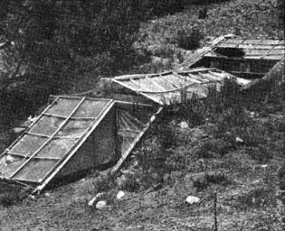

Build Your Own Ecosystem
This article describes the construction and uses of a complete ecosystem an underground hydroponic greenhouse and aquaculture tank powered by the wind, heated by the sun and fed on compost. The idea for this project has evolved slowly over the past few years. Here the basic principle of Grow-hole was also mentioned.
by JAMES B. DEKORNE
July/August 1974
UNDERGROND HYDROPONIC GREENHOUSE/FISH TANK
ALTITUDE=7,000 FT. CEMENT BLOCK AND LOG CONSTRUCTION
This is the first article in a series describing the construction and use of a complete "ecosystem "-an underground hydroponic greenhouse and aquaculture tank-powered by the wind, heated by the sun and fed on compost. Sound farfetched? Maybe so, but read on . . . you might change your mind!
The unit, built on my small homestead in northern New Mexico (altitude 7,000 feet), is still in the experimental stages, but preliminary results have far surpassed our expectations. As you can see from Fig. 5, the greenhouse-four feet below ground level and banked with earth on the north side-utilizes a 1,400-gallon solar-heated catfish tank as a heat source for winter vegetable growing. A 12-volt, 200-watt Wincharger supplies the power to circulate the water through filters and a small flat-plate solar heat collector. The liquid in the fish tank acts as a "heat battery", collecting solar energy during the daytime and radiating it back into the greenhouse at night.
The vegetables are grown hydroponically in 55-gallon drums cut in half lengthwise and filled with gravel. Under the eight hydroponic tanks are two additional drums cut in half horizontally to make four compost bins in which earthworms are raised. The worms are used to feed the catfish, and the worm castings are leached to make the organic hydroponic solution which feeds the plants.
Our ecosystem was designed to be almost completely self-sustaining. The wind generates the electricity which runs the water-circulating pump, the sun heats the water and the heated (and filtered) liquid keeps the fish happy and warms the greenhouse at night. The worms and their by-products provide food for fish and plants. The only substance that comes in from "outside" is the organic matter which feeds the worms, and that from no farther away than our animal pens and compost heap.
The idea for this project has evolved slowly over the past few years. I guess it began when I saw a copy of the Lama Foundation's Growhole poster (pg. 59 in The Last Whole Earth Catalog ). The original growhole, now fallen into disuse and ruin (see Fig. 1), was built a few years ago-at an altitude of 8,000 feet-by the Lama Commune on their land near Taos, New Mexico. It consisted of an excavation dug into a south-facing slope, shored up and framed with timber, then covered with two layers of 16-mil plastic sheeting. Apparently heavy snows in the winter of 1972 crushed the structure and it was never rebuilt.
The basic principles of the growhole, as stated on the poster, are: [1] The sun is a source of free energy and [2] The earth stores heat. All greenhouses make use of the first fact . . . it's the utilization of the second that makes the growhole unique. If the warmth of the sunlight failing on such a structure during the day could be retained overnight then, ideally, no auxiliary source of heat would be necessary. The Lama prototype was an attempt to create this condition by using the moist earth inside as a heat-collecting "storage battery".
Some time after I read the Growhole poster, I had the opportunity to visit another commune where an underground greenhouse had been made from the cellar excavation of a burned-out ranch building (see Fig. 2). This gave me the idea that a growhole doesn't necessarily have to be built into a hillside. "Since there's no south-facing embankment on my property," I reasoned, "why can't I just dig a hole in the ground, build a greenhouse on it and use the excavated dirt as insulation on the north wall . . . providing, in effect, an artificial southern slope?"
In the spring of 1972 borrowed $100 and hired a backhoe to dig out a 12' X 24' X 4' hole in the ground. For over a year the crater just sat there, with each rain or snowfall slowly filling it in again. Friends and neighbors were curious at first, then gradually ceased to mention the huge pit and accompanying pile of dirt which had become something of a local landmark. They were too polite to say so, but I knew that nobody (including my family) thought anything would ever come of it.
We had enough money saved to continue construction in the late summer of 1973. By then I had become interested in aquaculture through the writings of John Todd and Bill McLarney of the New Alchemy Institute and-after conversations and correspondence with both researchers-decided that fish farming would have to be a part of my greenhouse. I'd also been getting into hydroponic gardening and was curious about the feasibility of developing an organic nutritive solution. Slowly I formed the idea of an ecosystem: a food-proclucing unit that used no outside or polluting source of energy and was designed to take maximum advantage of nature's basic law of recycling.
In early September we began building the greenhouse. The construction was simplicity itself and could easily be duplicated by anyone. The photographs tell the story.
Once we'd cleaned the hole of the dirt and debris accumulated over a year and a half, we poured a concrete footing as a base for the cement blocks. Desire to save on the expense of concrete made us decide not to lay a slab floor for the entire structure but just for the area beneath the fish tank. The floor of the greenhouse proper consists of three inches of coarse gravel.
The cement-block walls were laid up without mortar, the use of that material being a skill which doesn't come naturally to me and which tries my patience exceedingly. I once built a root cellar of cement blocks and mortar (see MOTHER NO. 25) and found that it took me most of the day to lay up two courses. Even then, I was glad the final result would be hidden by dirt!
The mortarless method of cement-block laying is fast and simple: Two courses of block are neatly stacked up, with the aid of string and plumb bob to make sure they're straight and square. Then cement is carefully poured and tamped down every other hole. Wait for setting, and you're ready for another course. Reinforcing rods are put in the openings at four- or five-foot intervals to give the structure more strength. In this way, working rather leisurely, two men built the greenhouse walls in just two or three days. (I'd like to add that for this much concrete work a cement mixer is worth its weight in gold. I finally went out and bought one . . . it's something no homestead should be without.)
The inside wall of the fish tank was also made of cement blocks, with every hole filled with concrete, and rebar placed at about 2-1/2-foot intervals to provide the strength needed to withstand water pressure. Please note, however, that this technique was a big mistake and is not recommended. When the time came to fill the tank, it leaked like the proverbial sieve. There were just too many tiny holes for the water to run through! Only after plastering the inner surface with a stucco containing particles of fiberglass (sold under the trade name of Bloc-bond) and then painting a quarter-inch layer of hot tar on the sides and bottom did we finally stop the seepage. It would be much better to use slip forms and construct a tank with solid concrete walls.
The main support for the roof framing was a 25-foot section of pine tree which we brought down from a nearby national forest. Smaller pine poles and rough-cut 1 X 4 lumber complete the framework which supports the Filon "windows". (Filon is a fiberglass product designed especially for greenhouses. Our project took three 4' X 24' rolls, which I purchased through the Sears catalog at a total cost of about $90.00.)
Ventilator flaps were provided for use in summer, when the interior heat is expected to soar well over 100° F. We finished the basic structure in mid-October and even then got inside midday readings of 104° F. Such high temperatures, of course, are not desirable and we were glad to see the thermometer drop back down into the high 80's when the vent flaps were all opened.
Winter weather put a stop to further construction for a while, but-with the greenhouse itself completed-we decided to put in some vegetables and see how they would do on their own without any auxiliary source of heat. The tomatoes and squash both lasted well into December before I took pity on them and brought them into the house. Even after that, the radishes, lettuce, spinach and cabbage held their own . . . despite inside nocturnal temperatures as low as 22° F. I have no explanation for this other than that they just did not freeze. On several mornings I entered the greenhouse to find the plants' leaves almost black . . . a sure sign of frostbite. Then, by noon, they'd all have recovered and-if they didn't set any spectacular growth records-they at least stayed alive. As a straight growhole, I think our dugout can be considered a modest success.
The accompanying chart shows the outside, inside and fish tank low temperatures for the month of January 1974. Notice that outside readings fluctuated between 10° below zero (our low for the winter) and 27° above . . . a range of 37 degrees. On the night of January 3, the outdoor temperature went down to 5° below zero while the interior showed a balmy 34° (two degrees above the freezing point of water). I attribute this result to the 10 inches of insulating snow which covered the greenhouse. Nevertheless, I became worried that the weight of such an accumulation might damage the structure and shoveled it all off . . . only to have about three inches fall an hour later. Apparently even the thinner layer insulated the shelter fairly well, because that night-when the outside temperature plunged to 10° below-the coldest it got inside was 28° above. Walking into the growhole the next morning was like entering a heated room.
The range of inside low temperatures for January went from a high of 34° to a low of 25° . . . only nine degrees. Readings for the fish tank varied the same amount, from 44 to 35. These, remember, are low figures. The high inside daytime air temperatures fluctuated from 34° on January 2 to 79° on January 17, a difference of 45 degrees.
By the end of February warmer weather gave the plants what they needed, and we began eating radishes and lettuce from the greenhouse . . . not bad when you consider that outside temperatures were still dropping into the teens and low 20's at night. All this, remember, with no external source of heat in the growhole (the wind generator and solar panel had not yet been installed to warm the fish tank). When you consider the circumstances under which our setup functioned, I think these results are very promising indeed.
In my next installment I'll discuss hydroponic gardening and how it fits into our ecosystem.
|
UNDERGROND HYDROPONIC GREENHOUSE/FISH TANKALTITUDE=7,000 FT. CEMENT BLOCK AND LOG CONSTRUCTION |
FIG. 1: The Lama Foundation's Growhole, whichhas now fallen into disrepair, was the original inspiration for the author's ecosystem. |
 FIG. 2: Before startinghis ecosystem, Jim DeKorne visited this greenhouse made from the cellar hole of a burned out ranch home. |
|
FIG. 3: This photo the mortarless method of cement-block construction used by DeKorne inthe fabrication of his ecosystem. |
 FIG. 4: The completed greenhouse makes an attractive addition to the farm buildings on the Jim DeKorne mini-spread in New Mexico. |
FIG. 5: Interior of finished greenhouse, looking toward entrance. Note fish tank at left . . . which was empty when photo was taken. |
|
FIG. 6: One of the four ventilator flaps which are positioned along the uphill side of DeKorne's combination greenhouse/fish tank. |
|
|